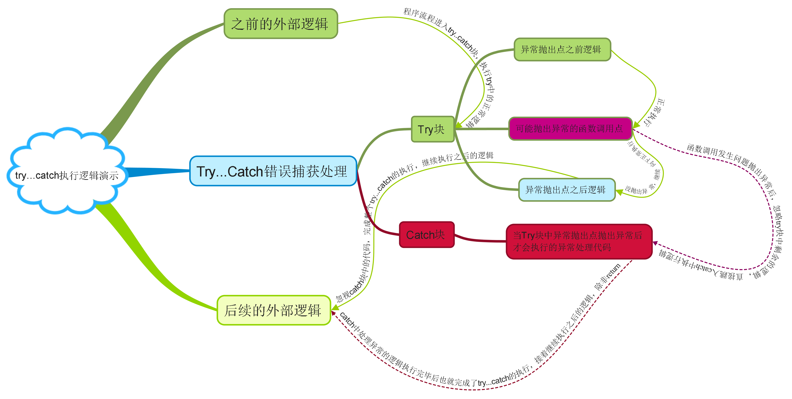

try块抛出异常的代码（通常是函数调用）之后的逻辑不在执行，而是跳转到下方的catch块中执行其中的异常处理逻辑
正常情况下catch块中逻辑执行完毕后还会继续执行整个try{}catch{}之外的后续代码，但考虑到在JavaWeeb中catch的异常处理逻辑很有k可能是执行请求转发到404页面或表单数据回显等页面，所以后续d代码y已经没有执行的意义，因此可以直接在catch块中用return结束整个函数调用————return的作用有两个(1)返回值(2)终止函数调用切记 66666666
